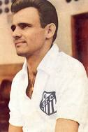
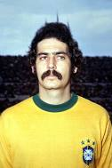
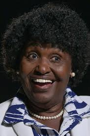

Edson Arantes do Nascimento nasceu em Três Corações, em 23 de outubro de 1940 e mooreu em 29 de dezembro de 2022, mais conhecido como Pelé, foi um futebolista brasileiro que atuou como atacante. Descrito como o "Rei do Futebol", é amplamente considerado como o maior atleta de todos os tempos.
José Macia nasceu em Santos, em 25 de fevereiro de 1935, mais conhecido como Pepe, é um ex-futebolista e ex-treinador brasileiro. Como jogador, atuou como ponta-esquerda e é considerado um dos maiores ídolos da história do Santos, única equipe em que defendeu de 1954 a 1969.
Cassius Marcellus Clay Jr mais conhecido como Muhammad Ali-Haj, nasceu em Louisville, em 17 de janeiro de 1942 e morreu em 3 de junho de 2016, foi um desportista pugilista estadunidense. É considerado um dos melhores da história do esporte.
Gilberto Passos Gil Moreira nasceu em Salvador, em 26 de junho de 1942, é um cantor, compositor, multi-instrumentista, produtor musical, político e escritor brasileiro. Em 1999, foi nomeado "Artista pela Paz", pela UNESCO.
Mário Jorge Lobo Zagallo nasceu em Atalaia, em 9 de agosto de 1931 e morreu em 5 de janeiro de 2024, foi um treinador e futebolista brasileiro que atuou como ponta-esquerda. Grande vencedor no futebol, dentro e fora de campo, detém o recorde de títulos das Copas do Mundo FIFA em geral(1958,1962,1970).
Roberto Rivellino nasceu em São Paulo, em 1 de janeiro de 1946, é um ex-futebolista brasileiro que atuava como meio-campista ou ponta-esquerda. Ídolo tanto do Timão, quanto do Flu, em 2002 ganhou uma placa no Estádio das Laranjeiras, enquanto o Corinthians fez um busto em 2014 no Parque São Jorge para homenageá-lo.
José Trajano Reis Quinhões nasceu no Rio de Janeiro, em 21 de outubro de 1946, é um jornalista e escritor brasileiro. Foi diretor de jornalismo e um dos fundadores da ESPN Brasil ao lado de Laércio Roma e Júlio Bartolo.
Benedita Sousa da Silva Sampaio nasceu no Rio de Janeiro, em 26 de abril de 1942, é uma servidora pública,política brasileira filiada ao Partido dos Trabalhadores(PT) e muitas outras coisas. Primeira senadora negra do Brasil.
Amarildo Tavares Silveira naceu em Campos dos Goytacazes, em 29 de julho de 1939, é um ex-futebolista brasileiro que atuava como atacante. Futebolista de muita habilidade, artilheiro, ponta-esquerda, Amarildo foi figura muito importante na Copa do Mundo FIFA de 1962.
Matteo Bini nasceu em Bérgamo, em 20 de junho de 1983.Em 2014, Bini co-dirigiu e co-escreveu o longa-metragem italiano Io, Arlecchino, produzido pela Officina della Comunicazione e Rai Cinema.